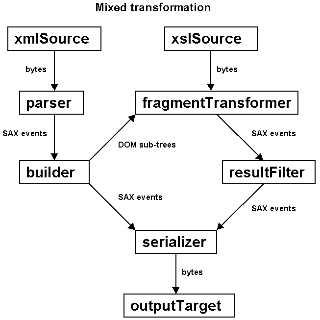

|
Devsphere.com |
|||||||||
| PREV PACKAGE NEXT PACKAGE | FRAMES NO FRAMES | |||||||||
See:
Description
| Interface Summary | |
| SDXController | The application implements this interface in order to control the mixed SAX 2.0 - DOM Level 2 parsing. |
| SDXOldController | The application implements this interface in order to control the mixed SAX 1.0 - DOM Level 1 parsing. |
| Class Summary | |
| SDXBuilder | This class provides the mixed SAX 2.0 - DOM Level 2 parsing functionality. |
| SDXBuilderT | This class provides the same SAX 2.0 - DOM Level 2 parsing functionality
as SDXBuilder implemented differently. |
| SDXOldBuilder | This class provides the mixed SAX 1.0 - DOM Level 1 parsing functionality. |
| SDXTransformer | This class applies an XSLT transformation to each DOM sub-tree created during the mixed SAX-DOM parsing of an XML document. |
Provides support for mixed SAX-DOM parsing and transforming.
A builder is a SAX handler that receives events from a SAX parser. These events can be forwarded to the application or can be used to construct DOM sub-trees. Therefore, a builder can operate in two parsing modes: SAX and DOM.
Each builder object needs from the application a SAX handler and a controller. The handler gets the SAX events during the SAX parsing mode. The controller has a double role:
The builder is initially in SAX parsing mode, which means that SAX events
are forwarded to the SAX handler provided by the application. During the SAX
parsing mode, the wantDOM() method of the controller object is called
for each element start. When wantDOM() returns true,
the builder retains the SAX events and uses them to build a DOM sub-tree,
which is then passed for handling to the handleDOM() method
of the controller object. The builder returns to the SAX parsing mode
automatically after the DOM sub-tree is completed and handled. This process
is repeated until the end of the parsed document, which means that multiple
DOM sub-trees can be constructed during the parsing of a single XML document.
All SAX events that aren't used to build the DOM sub-trees are passed to
the application's SAX handler.
SAXDOMIX also has a transformer that uses a builder to do mixed SAX-DOM parsing. By default, all SAX events that aren't used to build DOM sub-trees will be part of the final result. The DOM sub-trees are transformed using a "fragment transformer" and the produced SAX events will also be inserted into the final result. In other words, the mixed transformer implements the handling of the DOM sub-trees, which consists of applying an XSLT transformation. The application still has to control the switch from the SAX parsing mode to the DOM parsing mode.

API Requirements:
| Class / Interface | SAX | DOM | JAXP |
| SDXBuilder | 2.0 | Level 2 | 1.1 |
| SDXBuilderT | 2.0 | Level 2 | 1.1 |
| SDXController | 2.0 | Level 2 | 1.1 |
| SDXOldBuilder | 1.0 | Level 1 | 1.0 |
| SDXOldController | 1.0 | Level 1 | 1.0 |
| SDXTransformer | 2.0 | Level 2 | 1.1 |
|
Devsphere.com |
|||||||||
| PREV PACKAGE NEXT PACKAGE | FRAMES NO FRAMES | |||||||||